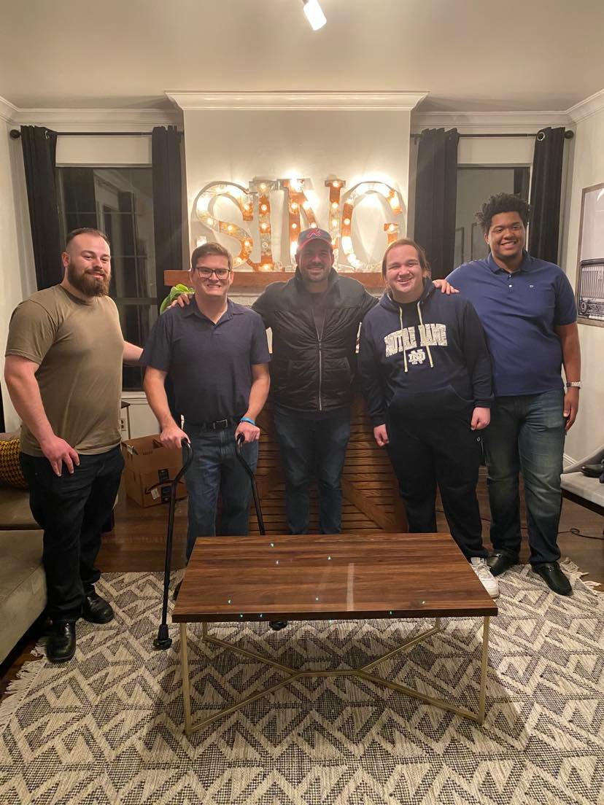
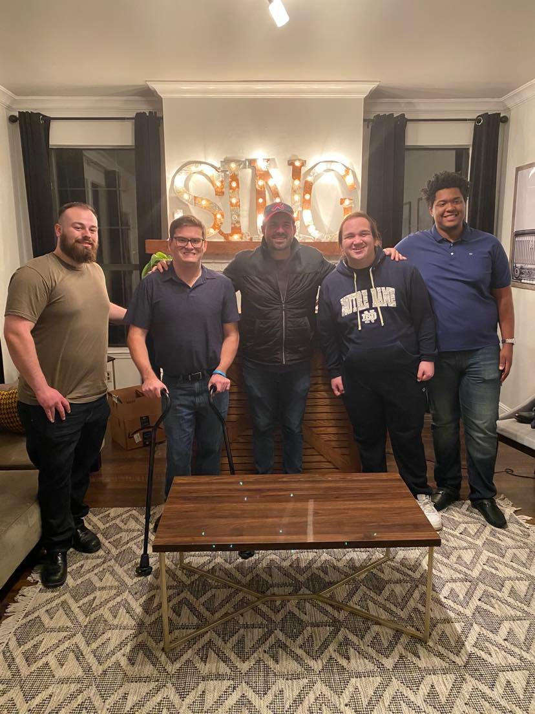

Shane Frantz
shanesfrantz@lewisu.edu
Discord: SirMac#8478

Introduction
Hello! My name is Shane Frantz. I am a Computer Science Major at Lewis University! I have two sisters, one works in a restaurant, and one is a music teacher.
In my free time, I work at Panera Bread, play online poker, and sing in both a barbershop quartet and chorus.
My chorus will be competing at the world championships in July, and my quartet is currently waiting to see if we have also qualified!

") 

What I Hope to Learn in this Course
- How to better program in C and Python (I currently only program in Java)
- How to better develop software in a team environment
- How to effsectively manage and organize a larger project
- How to explain my code effectively and efficiently
My Favorite Hobby / Activity
As mentioned previously, I love to sing. I sing in a chorus called New Tradition, based in Northbrook, IL. I also sing in a barbershop quartet called Optimum, with members from Massachusetts, Florida, and Georgia.
I have been singing ever since I was a kid, and have always loved both singing and listening to older styles of music.
I don't really have any big influences when it comes to my vocal style. My goal is to be as original and unique as possible.